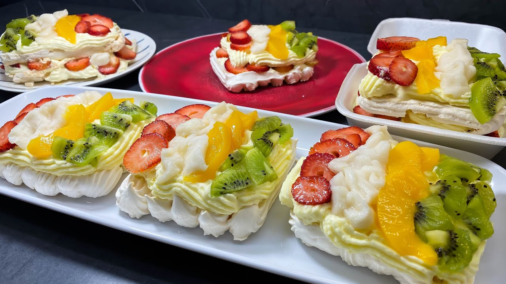

Merengón de Frutas

This delicious dessert is sold in nearly every small bakery in Bogotá, Colombia. It's sweet, tasty and beloved by adults and kids alike. It consists of two (or more) layers of meringue, whipped cream, and some fruit.
Some of the fruit, like the soursop, might not be easily found in some places. That's okay! Soursop is yummy but you can totally make this delicious dessert without it. Some people might have texture issues with it as well, so you can leave it out for Maximum Merengón Appeal.
You will need to have access to an oven to bake the meringue.
This recipe was taken and translated from Rosita Cocina's YouTube channel.
Ingredients
- 1/2 cup egg whites, or five small eggs with their yolks removed
- 1 cup white sugar
- 1/2 cup powdered sugar
- 1 Tbsp corn starch
- vanilla extract
- 1 pound soursop
- 1 pound strawberries
- 4 kiwis
- canned peaches
- 4 cups heavy cream
- wax paper sheets
Steps
- Preheat the oven to 100 C (212 degrees F).
- In a bowl, beat the egg whites and the white sugar together with a hand mixer. Place the powdered sugar on a strainer and pour it over the mixture -- powdered sugar tends to form clumps, so filter it through a strainer to maintain the soft texture of the meringue. Keep beating until stiff peaks form.
- When the mixture is considerably thick, add the corn starch and 6 drops of vanilla extract. Keep beating the mixture to get an even thicker consistency.
- Place the mixture on a tray and put it in the oven for an hour.
- While the meringue bakes, slice the fruit.
- Mix the heavy cream, a spoonful of sugar and 1/4 teaspoon of vanilla extract into a bowl, then beat them together with a hand mixer until you see stiff peaks form. Make sure the whipped cream remains cold at all times. You can put some ice cubes under the bowl to keep it cold.
- Remove the meringue from the oven.
- Cut the meringue into equal squares. Be careful! Meringue breaks easily.
- Carefully place the sliced fruit on top of the meringue squares, add a layer of whipped cream and another layer of fruit on top of it. Place a second meringue square to "sandwich" the fruit.
- You can add as many extra merengue squares, layers of whipped cream and fruit as gravity allows. Enjoy your dessert!
Back to main page